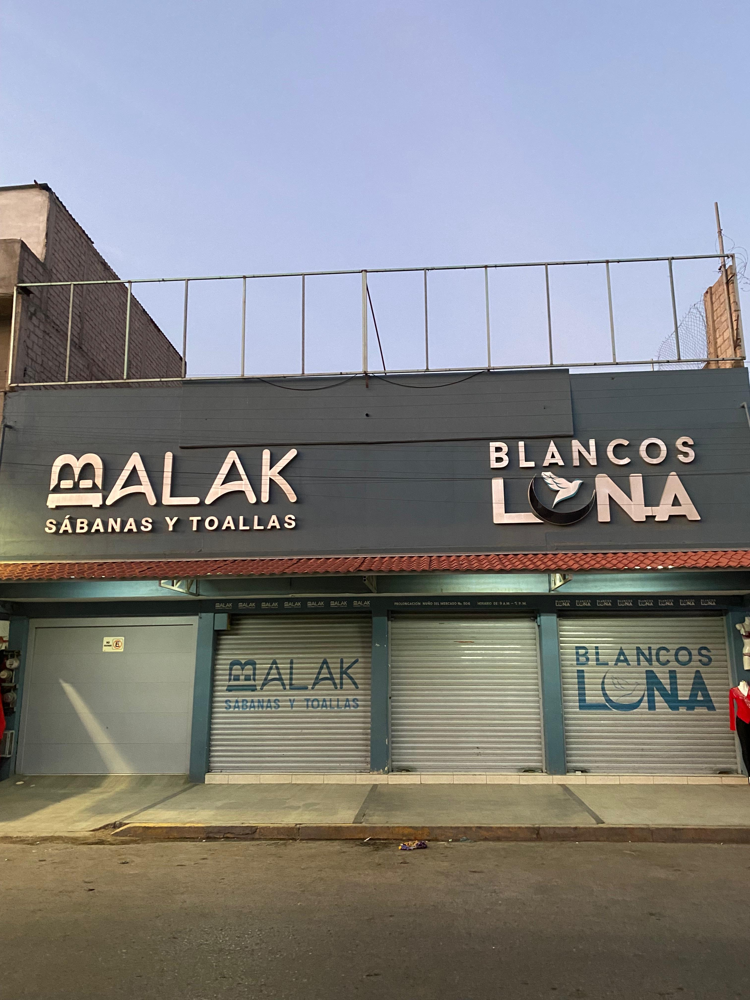
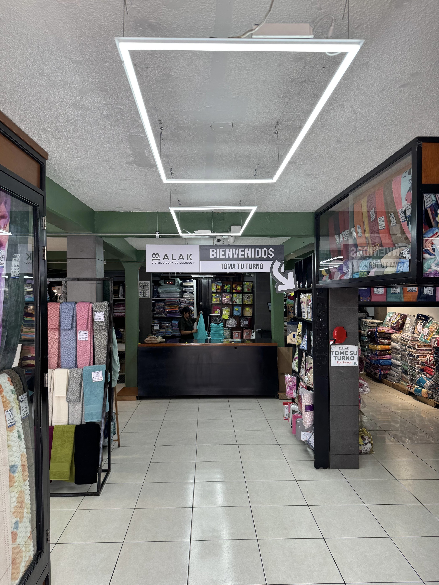
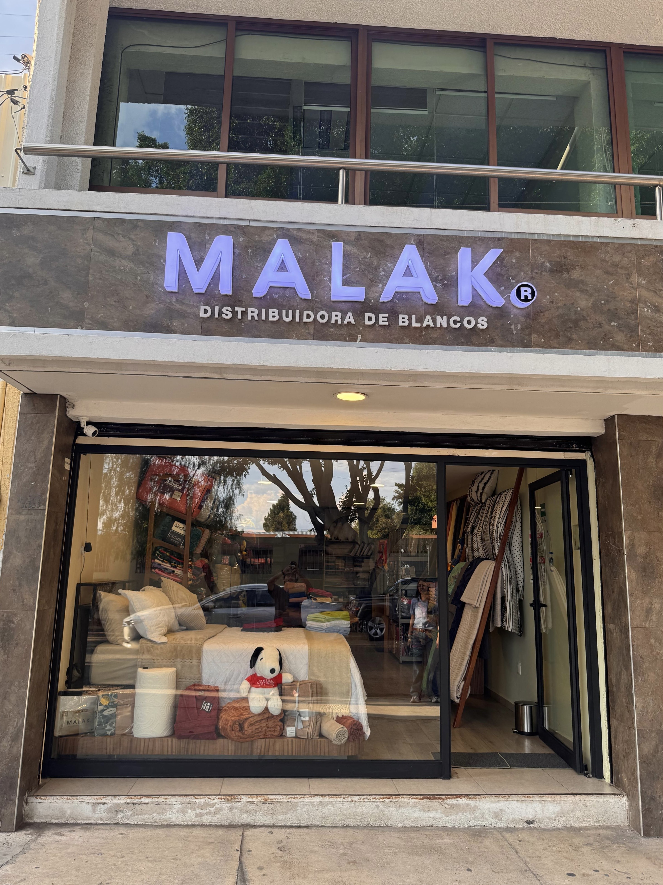
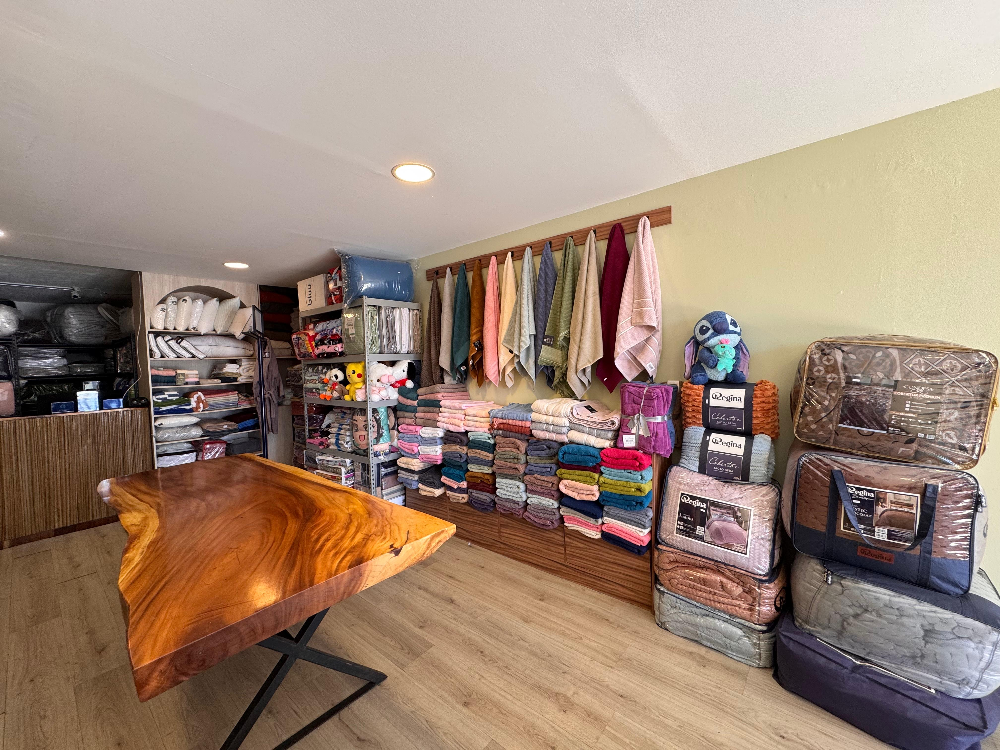
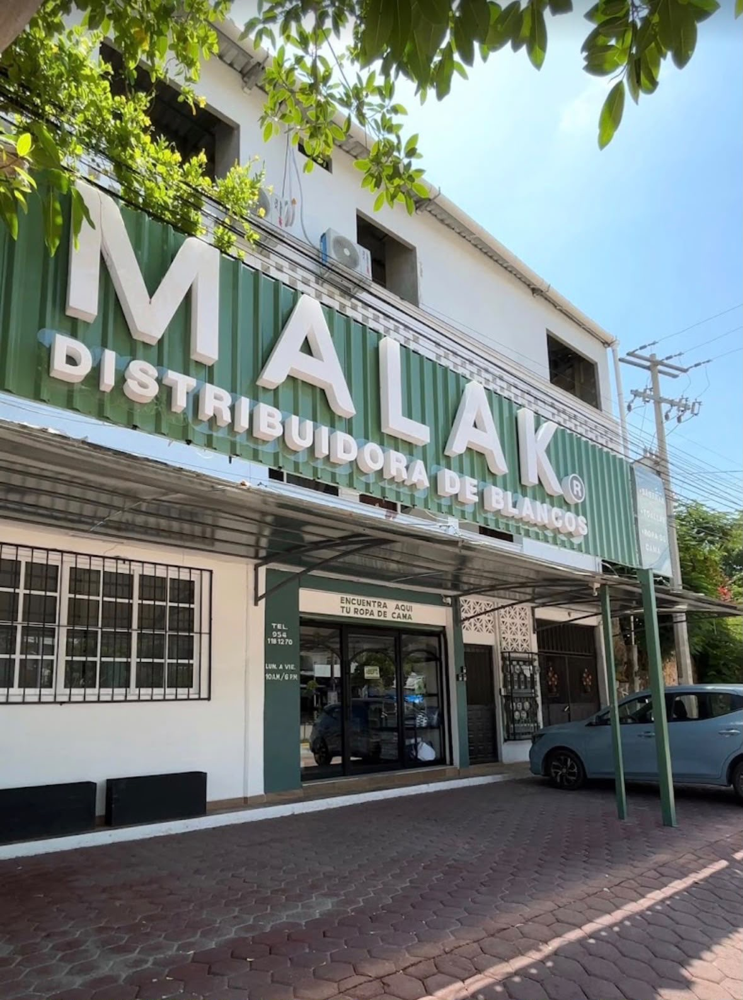
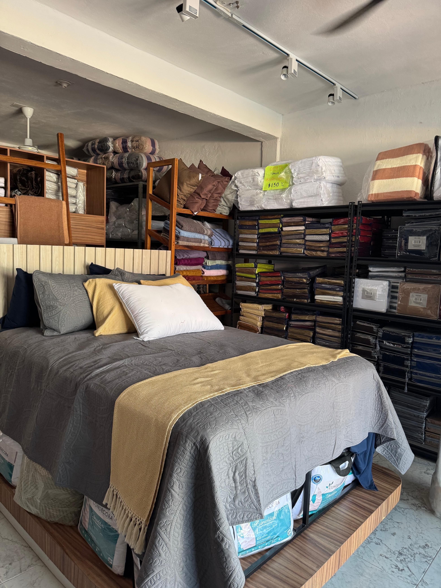

El inicio
El fundador de la familia comienza su camino en la venta de blancos para el hogar, dando origen a una historia que continúa hasta hoy.
Más de tres décadas de experiencia nos han permitido evolucionar desde los blancos para el hogar hasta convertirnos en un proveedor especializado en soluciones para hotelería.
El inicio de una tradición familiar alrededor de los blancos.
MALAK adopta el nombre que hoy representa a la familia.
MALAK nace de una historia construida con cercanía, experiencia y conocimiento del mercado de blancos en Oaxaca.
El fundador de la familia comienza su camino en la venta de blancos para el hogar, dando origen a una historia que continúa hasta hoy.
La empresa adopta el nombre que hoy representa a la familia que la dirige e inicia una nueva etapa enfocada en el sector hotelero.
MALAK continúa creciendo como proveedor especializado en blancos para hotelería, con atención cercana y presencia en Oaxaca de Juárez y Puerto Escondido.
Te ayudamos a seleccionar los productos adecuados para tus habitaciones, necesidades operativas y presupuesto.
Puedes revisar personalmente texturas, materiales y acabados antes de realizar tu pedido.
Atención directa, disponibilidad de productos y cobertura dentro del estado de Oaxaca.
MALAK cuenta con presencia en Oaxaca de Juárez y Puerto Escondido, con espacios donde puedes conocer nuestros productos y recibir atención personalizada.


Prolongación de C. de Nuño del Mercado 504,
68000 Oaxaca de Juárez, Oax.
Nuestra sucursal matriz y principal punto de atención para clientes mayoristas, hoteles y proyectos con mayores volúmenes de compra.


Sabinos 319B, Reforma,
68020 Oaxaca de Juárez, Oax.
Un punto de atención al norte de la ciudad, con una selección especial de productos y asesoría personalizada para ayudarte a elegir los mejores blancos para tu hogar o alojamiento.


Costera SN, Centro,
71984 Puerto Escondido, Oax.
Presencia en la costa para brindar atención cercana a hoteles y negocios de hospedaje de Puerto Escondido y la región.
La atención personalizada forma parte de MALAK. Nuestro enfoque es ayudarte a elegir opciones adecuadas para el tipo de habitación, nivel de uso y necesidades de operación de tu proyecto.
Solicitar atenciónPartimos de tus habitaciones, necesidades operativas y presupuesto.
Revisamos alternativas de producto, materiales, texturas y acabados.
Buscamos que cada opción responda al uso diario y a la experiencia que deseas ofrecer.